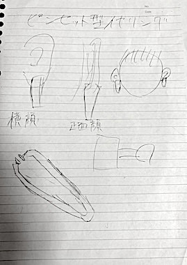
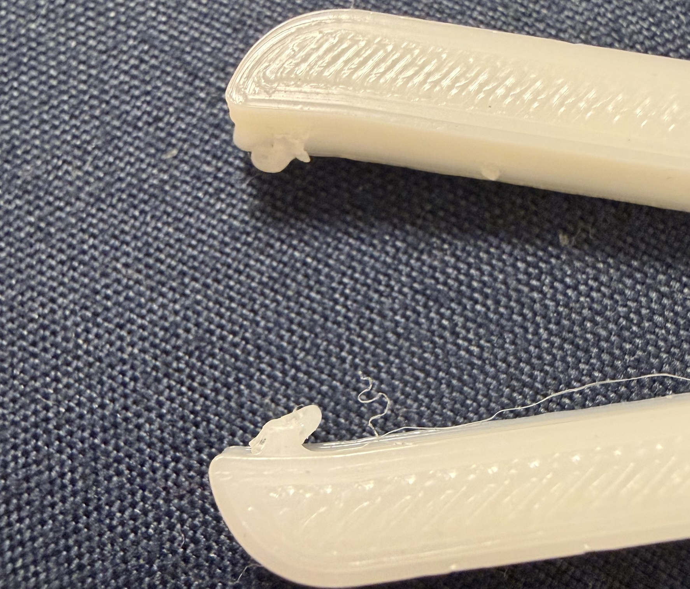
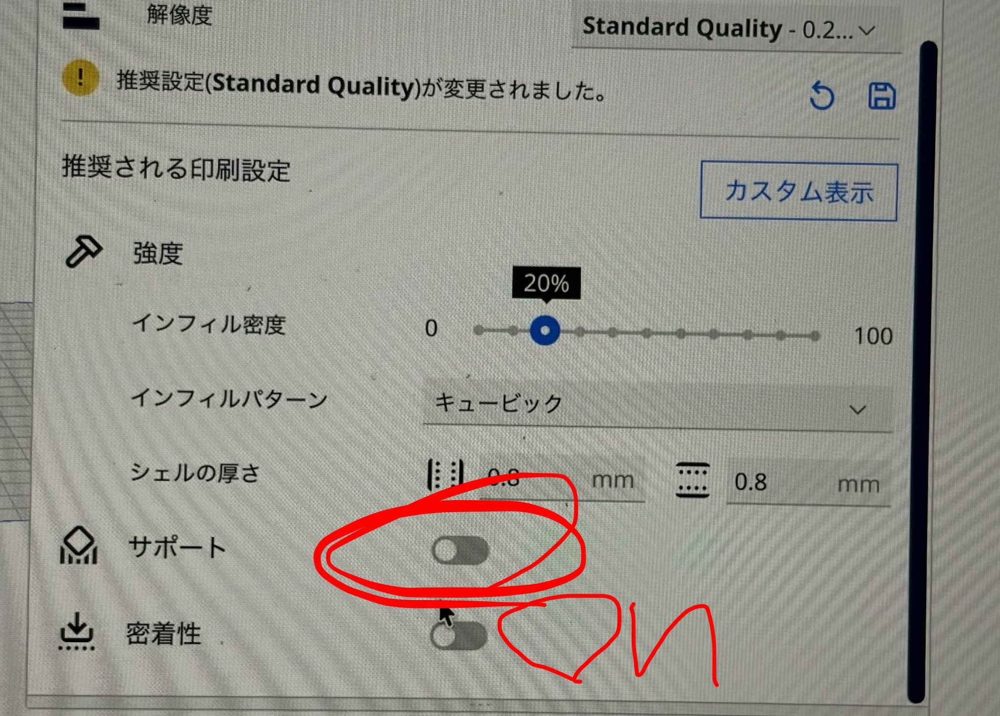
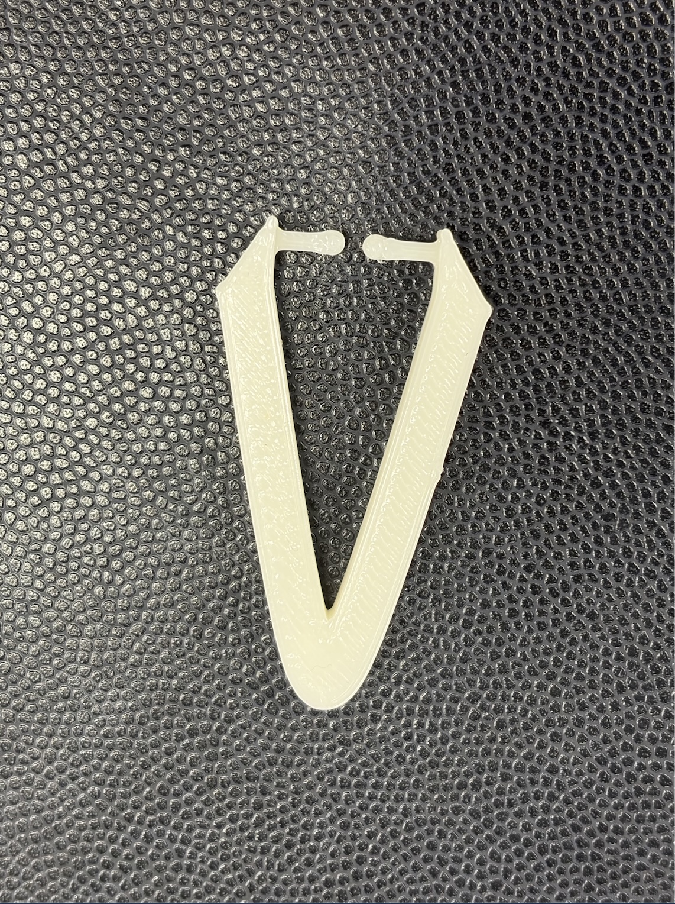
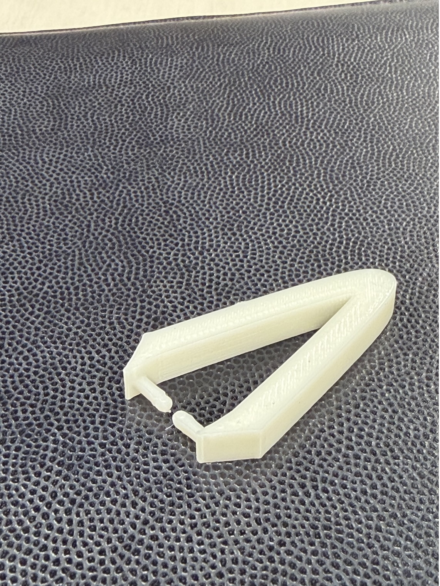
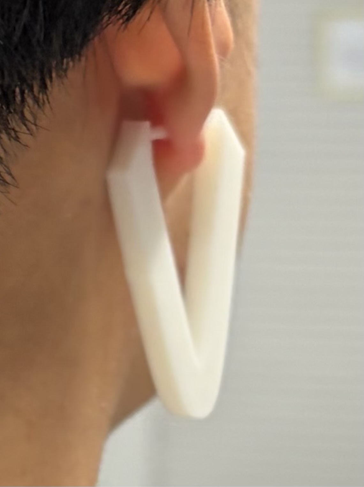
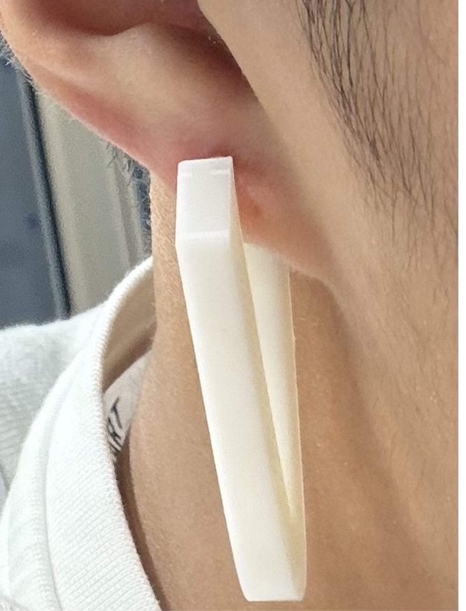

ピンセットとは毛など小さなものを挟むという特徴があり、イヤリングには耳を挟むという特徴があるため共通する「挟む」行為に着目し、2つを合わせてみようと思ったのがこの作品を作ったきっかけです。
最初に作ったときはサポート材をつけずに3Dプリントとしてしまったため、耳を挟む機能を持つ場所がごちゃっとなってしまった。


2回目では最初に作ったものより、鋭さが欲しいと思ったため、二つの先端のカーブを無くし、イメージで言うなら「シュッ」とさせました。 また、前回つけなかったサポートをつけて作ったところイメージの通りの作品ができました。



